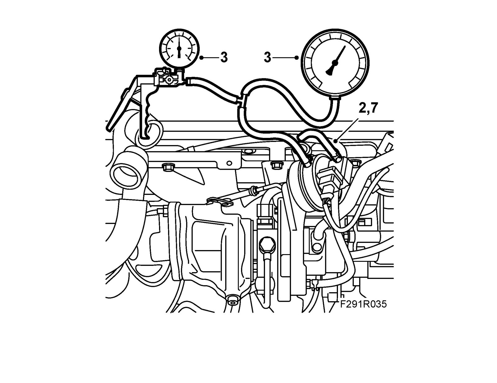

Wastegate Actuator: Testing and Inspection
Function check of diaphragm boxChecks
1. Remove the turbocharger heat shield.

2. Detach the hose from the diaphragm box.
3. Connect 30 14 883 Pressure/vacuum pump to the diaphragm box and 83 93 514 Charge pressure meter.
4. Pump up pressure carefully so that the control rod starts to move. Make sure the control rod does not return.
5. Release the pressure and check that the control rod returns to its original position without sticking.
6. Remove the charge pressure gauge and pressure/vacuum pump.
7. Refit the hose to the diaphragm box.
8. Fit the turbocharger heat shield.